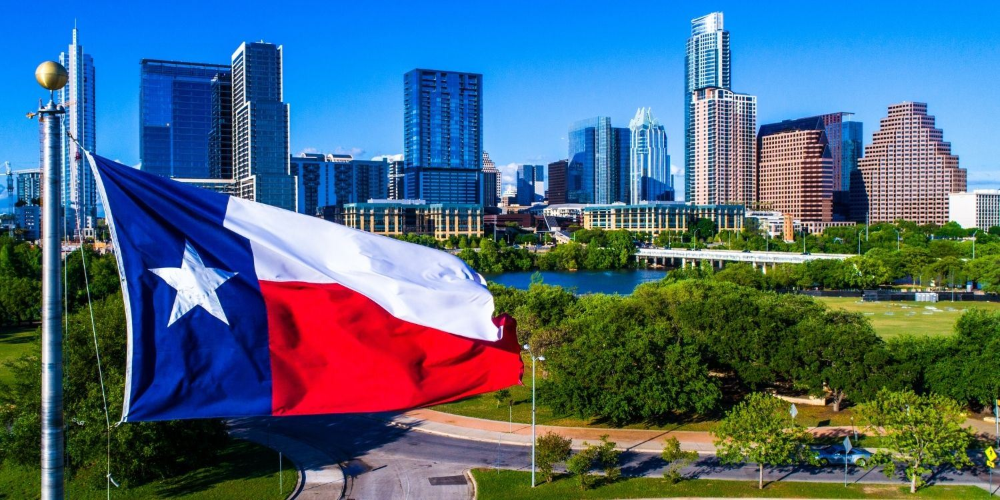

Texas (/tɛksəs/ TEK-səss) is the most populous state in the Southern United States. It borders Louisiana to the east, Arkansas to the northeast, Oklahoma to the north, New Mexico to the west, and an international border with the Mexican states of Chihuahua, Coahuila, Nuevo León, and Tamaulipas to the south and southwest, that forms a natural boundary delineated by the Rio Grande. Texas has a coastline on the Gulf of Mexico to the southeast. Covering 268,596 square miles (695,660 km2) and with an estimated population of over 31.7 million residents in 2025, it is the second-largest U.S. state by area and population. Texas is nicknamed the "Lone Star State" for the single star on its flag, symbolic of its former status as an independent country, the Republic of Texas.
Spain was the first European country to claim and control Texas. Following a brief period of French colonization, the territory became part of Mexico after its independence from Spain in 1821. Increasing tensions between settlers and the Mexican government culminated in the Texas Revolution, which included the Battle of the Alamo, and led to the establishment of the independent Republic of Texas in 1836. In 1845, Texas joined the United States as the 28th state. The state's annexation contributed to the Mexican–American War in 1846. Texas remained a slave state until the American Civil War, during which it seceded from the Union in 1861 and joined the Confederate States. After the war and the restoration of its representation in the federal government, Texas entered a prolonged period of economic stagnation.
The economy of Texas (prior to World War II) has been shaped by bison, cattle, cotton, oil, and timber industries. The cattle industry was a major economic driver and created the traditional image of the Texas cowboy. In the later 19th century, cotton and lumber grew to be major industries as the cattle industry became less lucrative. Ultimately, the discovery of major petroleum deposits (Spindletop in particular) initiated an economic boom that became the driving force behind the economy for much of the 20th century. Texas developed a diversified economy and high tech industry during the mid-20th century. As of 2024, it has the second-highest number (52) of Fortune 500 companies headquartered in the United States. With a growing base of industry, the state leads in many industries, including tourism, agriculture, petrochemicals, energy, computers and electronics, aerospace, and biomedical sciences. Texas has led the U.S. in state export revenue since 2002 and has the second-highest gross state product. Texas consistently ranks highly among national averages for business growth, job creation, and economic opportunity with low taxes and a regulatory environment that encourages innovation.
The Dallas–Fort Worth metroplex and Greater Houston areas are the nation's fourth and fifth-most populous urban regions respectively. Its capital city is Austin. Due to its size and geologic features such as the Balcones Fault, Texas contains diverse landscapes common to both the U.S. Southern and the Southwestern regions. Most population centers are in areas of former prairies, grasslands, forests, and the coastline. Traveling from east to west, terrain ranges from coastal swamps and piney woods, to rolling plains and rugged hills, to the desert and mountains of the Big Bend.